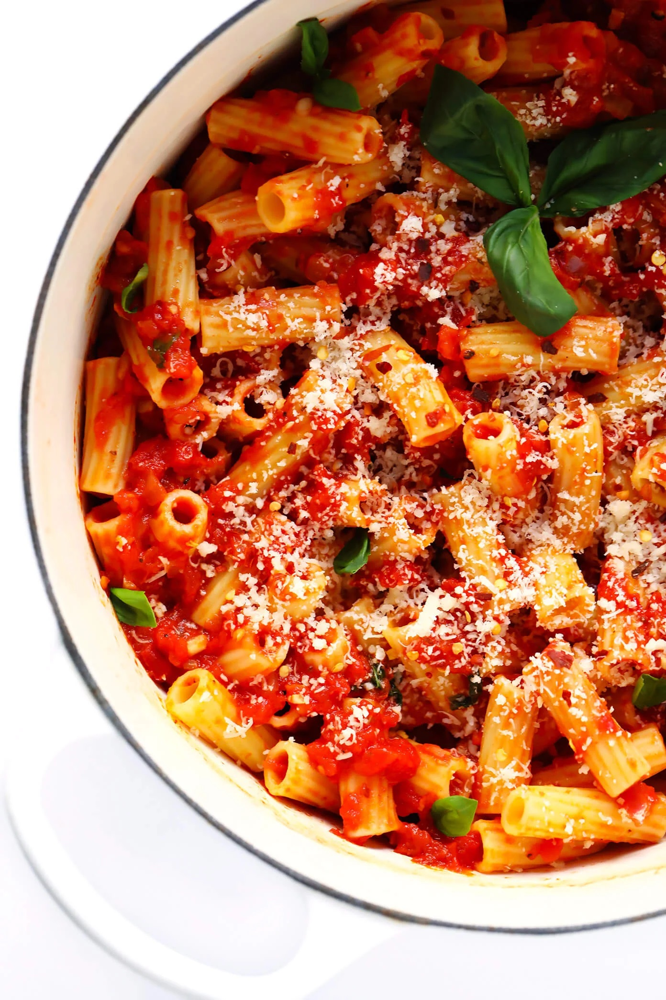

What you're going to need...
- Tomatoes (3-4 medium ones) — the redder, the better!
- 400g of crushed tomatoes
- 50-75ml of tomato paste
- 2 finely chopped (small) onions
- 1 tablespoon of garlic
- 1 tablespoon of sambal olek
- For flavouring: paprika, pepper, salt, lemon juice (ideally wine vinegar)
- Chopped fresh basil
- 1 teaspoon chilli flakes

Let's Get Cooking!
- Chop up tomatoes into very small pieces.
- Heat up your skillet with olive oil.
- Add in the onions and let them cook for 1-2 minutes.
- Add cut up tomatoes and cook for 1-2 minutes
- Add crushed tomatoes and garlic and cook for 3-4 minutes.
- Stir periodically and use wooden spoon to break up the tomato pieces.
- Add your flavourings – sambal olek, paprika, salt, pepper, lemon juice.
- Add chopped basil and chilli flakes.
- Add water so that it doesn’t become too thick.
- Let it sit for a while, and keep stirring.
- Keep it over a simmer until ready to eat.